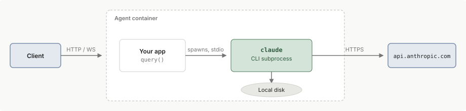

托管 Agent SDK
在生产环境中部署 Agent SDK：子进程架构、会话持久化、扩展、可观测性以及针对 Docker、Kubernetes 和沙箱提供商的多租户隔离。
Agent SDK 生成并监督一个 claude CLI 子进程，该子进程拥有一个 shell、一个工作目录和磁盘上的会话文件。托管它不像托管无状态 API 包装器。每个运行中的代理都是一个与本地状态绑定的长期进程，这决定了你如何分配资源、持久化会话以及跨租户扩展。
本页面涵盖在你自己的基础设施上自托管。有关可部署的 Dockerfile 和 Kubernetes 清单，请参阅托管指南。
如果你不需要在自己的基础设施上运行代理循环本身，请考虑改用托管代理。Anthropic 托管代理循环，你的应用程序通过客户端 SDK 或 REST API 发送事件并接收流式结果。工具执行在 Anthropic 托管的云沙箱或你自己的基础设施上的自托管沙箱中运行。
子进程模型
本页面上的每个托管决策都遵循 SDK 如何运行代理的方式。当您的代码调用 query() 时，SDK 会生成一个单独的 claude CLI 进程，并通过 stdio 与其通信。该子进程拥有 shell、工作目录和本地磁盘上的 JSONL 会话记录。

一个代理会话映射到一个子进程。运行 N 个并发会话意味着 N 个子进程，每个都有自己的进程树和记录文件。默认情况下，它们都继承您应用程序的工作目录。当会话需要单独的文件系统时，在每个会话的 query() 调用选项中传递不同的 cwd：
import { query } from "@anthropic-ai/claude-agent-sdk";
for await (const message of query({
prompt: "Summarize the files in this directory",
options: { cwd: "/work/session-a" },
})) {
console.log(message);
}
import asyncio
from claude_agent_sdk import ClaudeAgentOptions, query
async def main():
async for message in query(
prompt="Summarize the files in this directory",
options=ClaudeAgentOptions(cwd="/work/session-a"),
):
print(message)
asyncio.run(main())
本页面上的 TypeScript 示例使用顶级 await，因此将它们保存为 .mts 文件或在 package.json 中设置 "type": "module"。
存储在本地磁盘上的状态
三种代理状态默认存储在容器的文件系统上。它们都不会在容器重启、缩减或移动到不同节点时保留。
| 状态 | 默认位置 |
|---|---|
| 会话记录 | ~/.claude/projects/，或如果设置了 CLAUDE_CONFIG_DIR 则为其下的 projects/ 目录 |
CLAUDE.md 内存文件 |
用户层级为 ~/.claude/CLAUDE.md，项目层级为会话的工作目录 |
| 工作目录工件 | 会话的工作目录 |
要在主机间持久化记录，请配置 SessionStore 适配器。内存文件和其他工作目录工件需要自己的存储策略，例如挂载卷或对象存储同步。
有关会话、恢复和分叉在 API 级别如何工作的信息，请参阅 Sessions。
选择会话模式
这四种模式涵盖会话生命周期：容器相对于它所服务的会话的生存时间。关于容器运行的位置，托管指南提供了可部署代码，用于本地 Docker、Modal 和 Kubernetes。在此选择会话模式，并从指南中选择部署目标。
Ephemeral sessions
为每个用户任务创建一个容器，任务完成时销毁它。最适合一次性任务。用户可能仍然可以在任务完成时与 AI 交互，但一旦完成，容器就会被销毁。
示例工作负载包括 bug 调查和修复、发票和收据提取、文档翻译和媒体转换。
容器运行一个一次性入口点，从 TASK_PROMPT 环境变量读取任务，调用 SDK，然后退出。
import { query } from "@anthropic-ai/claude-agent-sdk";
const prompt = process.env.TASK_PROMPT!;
for await (const message of query({ prompt, options: { maxTurns: 20 } })) {
console.log(message);
}
import asyncio
import os
from claude_agent_sdk import ClaudeAgentOptions, query
async def main():
async for message in query(
prompt=os.environ["TASK_PROMPT"],
options=ClaudeAgentOptions(max_turns=20),
):
print(message)
asyncio.run(main())
脚本在每条消息到达时打印它，包括一条结果消息，当任务在轮次限制内完成时，其 subtype 为 success。如果任务改为达到 20 轮限制，结果消息的 subtype 为 error_max_turns，query() 调用在产生它后会抛出错误，因此如果容器需要干净地退出，请将循环包装在 try 块中。有关错误子类型，请参阅处理结果。
Long-running sessions
运行持久容器实例，通常每个容器托管多个 SDK 进程，以服务持续工作。最适合采取自主行动、提供内容或处理高容量消息流的代理。
示例工作负载包括对传入邮件进行分类和响应的电子邮件代理、通过容器端口托管每个用户可编辑站点的站点构建器，以及处理来自 Slack 等平台的连续流量的聊天机器人。
容器公开 HTTP 或 WebSocket 端点，并将每个活跃会话映射到一个长期查询及其后面的子进程。保持会话打开和预热的调用在 SDK 之间有所不同：
- TypeScript：使用
streamInput()向活跃会话添加轮次。调用startup()在传入流量前预热子进程。如果您在第一个请求到达之前不知道会话的工作目录，请改用prewarm()进行预热。 - Python：使用
ClaudeSDKClient在轮次间保持会话打开。
调整容器大小，使其能够在内存中容纳最大并发会话数。
Hybrid sessions
从启动时的 SessionStore 进行补充并将更新持久化回去的临时容器。最适合跨越许多交互但在交互之间处于空闲状态的会话。容器在空闲期间关闭，当用户返回时重新启动。
示例工作负载包括具有间歇性检查的个人项目管理器、在数小时内暂停和恢复的深度研究，以及在交互间加载票证历史的客户支持代理。
根据您期望用户返回的频率调整您的提供商的空闲超时。在没有配置 SessionStore 的情况下关闭容器会丢失其转录，因此存储对于此模式是必需的，而不是可选的。
该模式的关键在于通过 ID 恢复会话，并附加共享存储：
import { query, type SessionStore } from "@anthropic-ai/claude-agent-sdk";
declare const userInput: string;
declare const sessionId: string; // looked up from your database by user
declare const sessionStore: SessionStore; // an object store, key-value store, database, or your own adapter
for await (const message of query({
prompt: userInput,
options: { resume: sessionId, sessionStore },
})) {
// ...
}
from claude_agent_sdk import query, ClaudeAgentOptions, SessionStore
import asyncio
user_input: str = ...
session_id: str = ... # looked up from your database by user
session_store: SessionStore = ... # an object store, key-value store, database, or your own adapter
async def main():
async for message in query(
prompt=user_input,
options=ClaudeAgentOptions(
resume=session_id,
session_store=session_store,
),
):
...
asyncio.run(main())
Multi-agent container
在一个容器内运行多个 SDK 子进程。最适合必须紧密协作的代理，例如多代理模拟，其中代理在共享环境中相互交互。
为每个代理提供自己的工作目录，以便它们不会相互覆盖文件，并隔离设置加载，以便每个代理的 CLAUDE.md 文件不会泄漏到其他代理。有关具体选项，请参阅多租户隔离。
配置容器
基于容器的沙箱隔离
在沙箱容器内运行 SDK，以实现进程隔离、资源限制、网络控制和临时文件系统。
选择提供商时需要回答的问题：
- 谁运行沙箱：沙箱即服务提供商为您运营基础设施，而自托管选项则提供您可以在自己的服务器上运行的软件。
- 冷启动延迟：从"创建沙箱"到"准备好接受第一个请求"需要多长时间。临时模式需要亚秒级启动。长期运行模式可以容忍更长的延迟。
- 持久存储：提供商是否提供持久卷或仅提供临时磁盘。混合模式需要在沙箱内或沙箱旁边的某处进行持久存储。
- 定价模式：按秒、按请求或按小时固定计费。按秒定价适合突发的临时工作负载。按小时定价适合长期运行的会话。
- 网络：支持自定义出站规则、出站代理和私有 VPC 对等互联，用于受管制的环境。
有关自托管选项（如 Docker、gVisor 和 Firecracker）以及详细的隔离配置，请参阅 隔离技术。
运行时依赖项
容器需要您的 SDK 的语言运行时：
- Python SDK 需要 Python 3.10+，或 TypeScript SDK 需要 Node.js 18.14+
- TypeScript 和 Python SDK 都为大多数安装捆绑了本机 Claude Code 二进制文件，生成的 CLI 不需要单独的 Node.js 安装。有关需要单独本机 Claude Code 安装的安装，请参阅 quickstart 的安装说明。
捆绑的二进制文件固定到 SDK 包版本，因此更新 SDK 是更新 CLI 的方式。SDK 遵循 semver：持续采用补丁版本，并在采用次要版本之前查看 TypeScript 或 Python 更新日志。
资源
对于新启动的实例，每个代理 1 GiB RAM、5 GiB 磁盘和 1 个 CPU 是一个合理的起点。内存使用量随会话长度和工具活动而增长，因此应根据您实际需要的会话长度和并发性进行调整，而不是根据空闲基线。有关如何计算每个主机的代理数，请参阅 扩展和并发。
网络
SDK 需要对 api.anthropic.com 的出站 HTTPS，或在 Amazon Bedrock 或 Google Cloud 的 Agent Platform 上运行时对您的提供商的区域端点的出站 HTTPS。如果您的代理使用 MCP 服务器 或外部工具，它们还需要对这些端点的出站访问。对于生产环境，通过强制执行域允许列表、注入凭据和记录请求的出站代理路由出站流量。有关完整模式，请参阅 安全部署。
对于入站流量，在容器上公开 HTTP 或 WebSocket 端口。您的应用程序在该端口上处理客户端请求并在内部调用 SDK；子进程本身不在网络上侦听。
处理生产环保
在部署自托管代理之前，需要完成这些决策。
会话和状态持久化
默认本地磁盘在重启、缩减或移动到不同节点时会丢失。对于用户期望恢复的任何会话，使用 SessionStore 适配器将记录副本镜像到持久存储。查看参考实现了解对象存储、键值存储和数据库的示例适配器，以及用于您自己实现的一致性测试套件。
关于 SessionStore 行为的三个要点：
- 仅限记录：
SessionStore镜像记录，不镜像CLAUDE.md内存文件或其他工作目录工件。挂载共享卷或单独同步这些文件。 - 镜像，不替换：子进程首先写入本地磁盘，SDK 将每个批次的副本转发到存储。新会话的本地记录比运行时间更长；从存储恢复的运行在结束时删除其本地副本，因此存储保存唯一的持久副本。查看双写架构。
mirror_error消息：当 SDK 无法将批次传递到存储时，它会丢弃该批次，发出{ type: "system", subtype: "mirror_error" }消息，并继续查询。如果存储持久性很重要，请对这些消息进行警报。查看镜像写入是尽力而为了解重试和超时行为。
可观测性
Agent SDK 代理是长期运行的进程，在许多 API 往返中生成工具调用。没有遥测，您无法看到哪些工具运行、它们花费了多长时间，或会话在哪里停滞。
SDK 从环境继承 OpenTelemetry 配置。在容器或编排器级别设置 OTEL 环境变量，以便每个 query() 调用都将跨度、指标和日志事件导出到您的收集器。下面的示例为所有三个信号启用 OTLP 导出。CLAUDE_CODE_ENHANCED_TELEMETRY_BETA 仅对跟踪是必需的；如果您仅导出指标和日志，请省略它。
CLAUDE_CODE_ENABLE_TELEMETRY=1
CLAUDE_CODE_ENHANCED_TELEMETRY_BETA=1
OTEL_TRACES_EXPORTER=otlp
OTEL_METRICS_EXPORTER=otlp
OTEL_LOGS_EXPORTER=otlp
OTEL_EXPORTER_OTLP_PROTOCOL=http/protobuf
OTEL_EXPORTER_OTLP_ENDPOINT=http://collector.example.com:4318
默认情况下，导出中不包含提示文本和工具输入。查看控制导出中的敏感数据了解选择加入标志，以及可观测性了解完整的信号目录。
身份验证和密钥
托管时有三个身份验证问题很重要：
- Anthropic API：子进程从其环境读取
ANTHROPIC_API_KEY。从您的密钥管理器提供它，或设置ANTHROPIC_BASE_URL以通过在容器外注入密钥的代理路由模型调用。查看凭证管理了解代理模式，以及SDK 快速入门中的设置了解支持的身份验证方法。 - 入站：在代理容器前面的网关处放置身份验证。代理应接收预先认证的请求，不应是验证用户令牌的组件。
- 出站工具：将工具凭证保留在代理环境之外。通过代理路由出站调用，该代理在请求离开容器后注入 API 密钥。代理进行调用；代理添加凭证。
扩展和并发
每个会话在其自己的子进程中运行，因此主机上的并发受其 RAM 可以容纳的子进程数量限制。
使用此公式调整每个主机的大小：
agents per host = (host RAM - overhead) / (per-session RAM ceiling)
通过在您的目标长度下运行代表性会话并在您的预期工具负载下记录峰值 RSS 来测量每会话上限。资源中的 1 GiB 起点是下限，不是上限。
水平扩展路由取决于您的模式。对于长期运行的会话（其中容器保存许多会话），在负载均衡器后面运行容器池，并使用 sessionId 上的一致哈希将每个会话固定到一个容器。固定会话继续命中同一容器，因此同一运行的子进程，直到它被驱逐或容器重启。
成本
Anthropic 令牌成本通常比容器基础设施成本高一个数量级或更多。最小配置的容器运行成本大约为每小时 \$0.05，而单个长代理会话可能花费数美元的令牌。查看成本跟踪了解每会话令牌计数。
多租户隔离
默认 SDK 行为从文件系统读取设置和 CLAUDE.md 内存文件。在为多个租户服务的共享容器中，这些文件可能会将一个租户的上下文泄露到另一个租户的会话中。
要在共享容器内隔离租户：
- 在 TypeScript 中传递
settingSources: []或在 Python 中传递setting_sources=[]以跳过用户、项目和本地设置。 - 在
env中设置CLAUDE_CODE_DISABLE_AUTO_MEMORY=1。自动内存在~/.claude/projects/<project>/memory/加载到系统提示中，无论settingSources如何。查看settingSources 不控制的内容了解无条件加载的其他输入。 - 将
CLAUDE_CONFIG_DIR指向每个租户目录，以便租户不共享~/.claude.json全局配置。当每个配置目录服务一个工作目录，并且您不在租户之间共享SessionStore时，您也可以在env中设置CLAUDE_CODE_PROJECT_DIR_NAME以保持其下的记录路径简短。需要 TypeScript Agent SDK v0.3.234 或更高版本，或 Python Agent SDK v0.2.140 或更高版本。 - 使用每个租户工作目录。在每个
query()调用上显式传递cwd。 - 在您的代理处应用每个租户出站规则，例如不同的出站 IP、凭证或域名白名单，以便受损的租户无法通过另一个租户的出站策略泄露数据。
下面的示例将设置、自动内存、配置目录和工作目录选项应用在一起。构造 tenantDir 和 configDir，以便每个租户获得其他租户无法读取的路径。在 TypeScript 中，env 替换子进程环境，因此展开 ...process.env 以保持继承的变量，如 PATH 和 ANTHROPIC_API_KEY。在 Python 中，env 合并到继承的环境之上。
import { query } from "@anthropic-ai/claude-agent-sdk";
declare const prompt: string;
declare const tenantDir: string;
declare const configDir: string;
for await (const message of query({
prompt,
options: {
cwd: tenantDir,
settingSources: [],
env: {
...process.env,
CLAUDE_CONFIG_DIR: configDir,
CLAUDE_CODE_DISABLE_AUTO_MEMORY: "1",
},
},
})) {
// ...
}
from claude_agent_sdk import query, ClaudeAgentOptions
import asyncio
prompt: str = ...
tenant_dir: str = ...
config_dir: str = ...
async def main():
async for message in query(
prompt=prompt,
options=ClaudeAgentOptions(
cwd=tenant_dir,
setting_sources=[],
env={
"CLAUDE_CONFIG_DIR": config_dir,
"CLAUDE_CODE_DISABLE_AUTO_MEMORY": "1",
},
),
):
...
asyncio.run(main())
已知限制
在您的部署设计中规划这些限制。
| 限制 | 解决方案 |
|---|---|
| 没有顶级会话超时 | 会话不会自动超时。在 TypeScript 中设置 maxTurns 或在 Python 中设置 max_turns，以限制 Agent 在停止前执行的轮次数。 |
| 长会话中的内存增长 | 限制会话长度或定期回收子进程。请参阅扩展和并发。 |
| 大规模并行子代理扇出可能会触发速率限制 | 将工作分解为较小的批次，而不是发出一个宽范围的调度。 |
| 没有每个子代理的挂钟截止时间 | 在其 AgentDefinition 中使用 maxTurns 限制每个子代理。CLAUDE_ASYNC_AGENT_STALL_TIMEOUT_MS 设置一个停滞监视程序，当子代理停止产生输出时触发；它不是总运行时截止时间。 |
排查部署失败
当在已部署的服务中运行的代理在您的机器上工作正常但在部署后失败时，请使用本部分。下面的每一项都列出了一个失败情况并链接到相应的条目：
- 服务启动时找不到 CLI：在 Python 中，容器或服务管理器运行您的应用程序时使用的
PATH与您的 shell 不同，因此在本地有效的安装对该进程不可见。在 TypeScript 中，镜像构建跳过了 SDK 的可选依赖项，或者pathToClaudeCodeExecutable指向镜像中不存在的文件。请参阅 Claude Code not found。 - CLI 在镜像中存在但无法启动：Claude Code 无法从与容器架构或 libc 不匹配的二进制文件启动，或者从在镜像构建中失去执行权限的文件启动。请参阅 Failed to start Claude Code。
- Claude Code 进程在运行中途退出：您的应用程序收到的错误取决于 SDK 语言以及 CLI 是否首先报告了错误结果。CLI 进程退出 下的条目涵盖了每条消息。